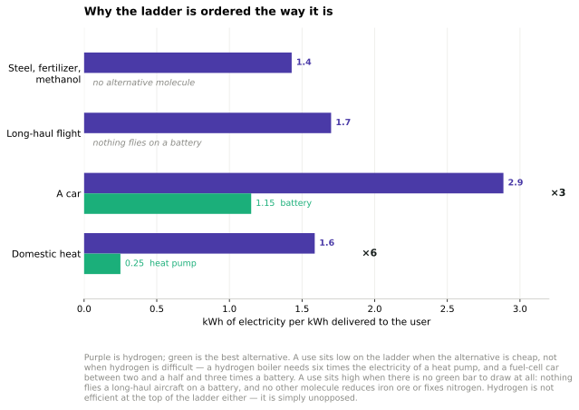

O The hydrogen ladder
A chapter added in the 2026 revision. Chapter 20 answers MacKay’s question about the hydrogen car and finds his 2008 verdict intact. This chapter takes the general form of that answer, because the reasoning MacKay applied to one vehicle turns out to settle every hydrogen question, and somebody has done the work of applying it to all of them at once.
A ranking, not a verdict
Michael Liebreich’s Clean Hydrogen Ladder sorts the proposed uses of clean hydrogen into rungs, from the ones where hydrogen is unavoidable down to the ones where it is beaten so comfortably that proposing it is a mistake. Version 5.0, of October 2023, is the one this book cites.1
Two things about it are worth saying before any of the contents.
It is a ranking of hydrogen against its alternatives, use by use — not a forecast of how much hydrogen there will be, nor a claim that the top rungs will happen. A use is high on the ladder when nothing else can do the job, and low when something else does the job better. That is a narrower claim than it is usually read as, and the last three years have made the difference matter.
And it is this book’s method under another name. MacKay’s rule was to put competing options in the same units and let the arithmetic order them. The ladder does exactly that for one carrier, and it reaches its ordering the same way: not by asking which use is most important, but by asking, for each use, what the alternative costs in kilowatt-hours.
The arithmetic that produces the ordering
Hydrogen is not an energy source. It is made from something else and then used, and each conversion takes its cut. The ladder’s shape follows from where those cuts land.
Electrolysis delivers about 70% of the electricity into the hydrogen. Compressing or liquefying for transport takes perhaps another 10 to 30%. Converting back to electricity in a fuel cell returns about 50 to 60% of what is left. So the round trip from electricity, through hydrogen, back to electricity keeps between 25 and 38% — 0.70 × 0.70 × 0.50 at the unfavourable end, 0.70 × 0.90 × 0.60 at the favourable one — and every use of hydrogen made from electricity carries some part of that chain.
Now put two uses through it.
A car. A kilowatt-hour delivered at the wheels of a fuel-cell car costs roughly 1 ÷ (0.70 × 0.90 × 0.55) ≈ 2.9 kWh of electricity — taking the optimistic end of the compression range, since the unfavourable end gives 3.7. The same kilowatt-hour in a battery car costs about 1.15, because charging and discharging lose little. Hydrogen is therefore between two and a half and three times worse before anything else is considered, which is why chapter 20 finds fuel-cell cars where it does. MacKay reached the same place in 2008 with a single measurement — his BMW Hydrogen 7 at 254 kWh per 100 km against an average car’s 80.
A house. A heat pump at a coefficient of performance of 4 turns one kilowatt-hour of electricity into four of heat. A hydrogen boiler turns the same kilowatt-hour into 0.70 of hydrogen, which a boiler at about 90% turns into 0.63 of heat. The ratio is more than six to one. Domestic heating sits at the bottom of the ladder for the same reason it takes up chapter 7 of this book: there is an alternative that does the job several times over.

Figure O.1. The ladder’s ordering, derived rather than reproduced. This is not Liebreich’s chart — it is the arithmetic above, drawn. Each purple bar is the electricity hydrogen needs to deliver one kilowatt-hour of what the user wants; each green bar is what the best alternative needs. The two bottom rungs have a green bar and lose to it. The two top rungs have no green bar to draw. The bottom two are measured at the point of use; the top two at the fuel and the feedstock, because that is where the comparison stops. Added in the 2026 revision.
Nothing in either calculation is about hydrogen being difficult. It is about the alternative being cheap. That is the ladder’s whole logic, and it explains the top rungs as well as the bottom: fertilizer, refining, methanol and the direct reduction of iron are near the top because there is no alternative molecule, not because hydrogen is efficient there. It is not.
Both ends of the ladder are already in this book
This edition contains the extremes without having named them as such.
The top rung is chapter 13. The 2 kWh per day per person of fertilizer energy is hydrogen — made from natural gas by the Haber–Bosch process, and the largest existing use of hydrogen in the world. That is not a proposal; it is a hundred-year-old industry, and the only question is what the hydrogen is made from.
The bottom rung is chapter 20, where hydrogen cars are, and chapter 7, where domestic heating is.
And the middle is chapter 20’s electrofuel section. Aviation is the interesting case precisely because it sits high without being at the top: batteries cannot fly a long-haul aircraft, so the alternative is not electricity but a synthetic liquid — which is itself made from hydrogen, at about 1.7 kWh of electricity per kWh of fuel. The ladder puts jet aviation high because the alternatives are worse, not because the arithmetic is good.
What happened after Version 5.0
The ladder was published in October 2023, near the top of the enthusiasm. What followed is the part a 2026 edition has to record.
Roughly 60 major clean-hydrogen projects were cancelled during 2025 alone, together representing over 4.9 million tonnes a year of announced capacity. Against that, about 59 projects started construction, totalling around 1 million tonnes a year. More than a hundred projects have been cancelled, paused or cut back since mid-2024, and about a third of the electrolyser capacity once announced for 2030 has come off the public timelines.
The names are not marginal ones. BP cancelled the 1.5 GW Duqm project in Oman and the 1.2 GW H2Teesside in December 2025. Air Products paused its Teesside import terminal. ExxonMobil froze a 900 000 tonne-a-year plant at Baytown.2
And the failure reached the top of the ladder, which is the part worth pausing on. ArcelorMittal cancelled its green-hydrogen direct-reduced iron plants in Germany — steel being one of the uses the ladder ranks as unavoidable. The stated reason was not that some rival technology had beaten hydrogen at making steel. It was that European electricity prices were too high and Europe was importing cheap steel without a carbon border to price its emissions.
What the ladder cannot see
That cancellation is the clearest statement of this chapter’s point, and it is a limitation rather than an error.
The ladder ranks hydrogen against its alternatives for each use. It says nothing about whether hydrogen will be affordable at all. A use can sit on the top rung — no alternative, hydrogen wins its comparison outright — and still not be built, because the electricity to make the hydrogen costs more than the finished product can bear, or because the competing product arrives from somewhere that does not pay for its carbon. Both of those are true of European steel in 2026, and neither is visible anywhere on the ladder.
So the ranking is right and it is not sufficient. A use has to clear two tests, and the ladder administers one of them. The first is whether hydrogen beats the alternatives, which is physics and arithmetic and which the ladder settles well. The second is whether anyone can afford to build it, which is chapter 28a’s question about the price of electricity and chapter 29’s about what regulation obliges — and which the last three years answered in the negative far more often than the ladder’s shape would suggest.
This is the finding this edition keeps arriving at from different directions. Chapter 7 finds heat pumps blocked by a price ratio rather than by physics; chapter 23 finds carbon capture built at one part in seven hundred with the subsidy exceeding the cost at the best sites; chapter 11a finds houses waiting behind data centres in a connection queue. Here it is a steelworks that the physics permits, the ladder endorses, and the electricity price and the tariff schedule between them prevent.
MacKay’s method establishes what is possible. It was never designed to establish what will be paid for, and he said so. The ladder is the same kind of instrument, and it has the same blind spot — which is not a criticism of either, so long as nobody mistakes a ranking for a plan.
Notes and further reading
Michael Liebreich, “Clean Hydrogen Ladder Version 5.0”, 19 October 2023, https://liebreich.com/hydrogen-ladder-version-5-0/. Version 5.0 was the first substantial revision since V4.1 of August 2021, and it moved in both directions: jet aviation, regional trucks and short-duration grid balancing were promoted, while seven uses were demoted, among them non-road mobile machinery — following the mining industry’s own conclusion that battery-electric was the better answer for haul trucks. The bottom tier expanded to hold eight uses, including cars and taxis, metro transit, agricultural and mining equipment, bulk international fuel delivery, low-temperature heat below 200 °C, domestic heating and direct electricity generation from hydrogen. Two cautions on using it. The ladder is one analyst’s ranking, revised as he changes his mind, and its value lies in the reasoning rather than in any particular rung — this chapter reproduces the logic and the extremes rather than the full grid, which is Liebreich’s work and is best consulted at the source. And the rungs are relative, so a use can move without anything changing about hydrogen: a demotion usually means the alternative improved, which is exactly what happened to mining trucks.↩︎
The cancellation figures — about 60 major projects cancelled during 2025 representing over 4.9 million tonnes a year of announced capacity, against 59 projects starting construction totalling roughly 1 million tonnes a year, with more than a hundred projects cancelled, paused or cut back since mid-2024 and about a third of announced 2030 electrolyser capacity withdrawn — are from trade and industry reporting collated through 2025 and 2026, including Chemistry World’s survey of the year’s cancellations. Named projects: BP’s Duqm (1.5 GW, Oman) and H2Teesside (1.2 GW, blue hydrogen, United Kingdom), both cancelled in December 2025; Air Products’ paused Teesside import facility; ExxonMobil’s frozen 900 000 t/y blue hydrogen plant at Baytown; and ArcelorMittal’s cancelled hydrogen direct-reduced iron plants in Germany. Three things to hold in mind. Announced capacity is not a meaningful denominator — a large share of it was never going to be built, so a fall in announcements is partly the deflation of a number that was never real, and the construction figure of about 1 million tonnes a year is the more honest measure of what is actually happening. “Cancelled” covers everything from formal abandonment to indefinite deferral, and the categories are not applied consistently between sources. And a single year is a short base for a claim about a trend: final investment decisions in 2025 were reported as up about a fifth on 2024, on a different and smaller shape of project, so the sector is narrowing rather than simply shrinking. What is not in doubt is the direction of the revision, and that it reached uses the ladder places at the top.↩︎